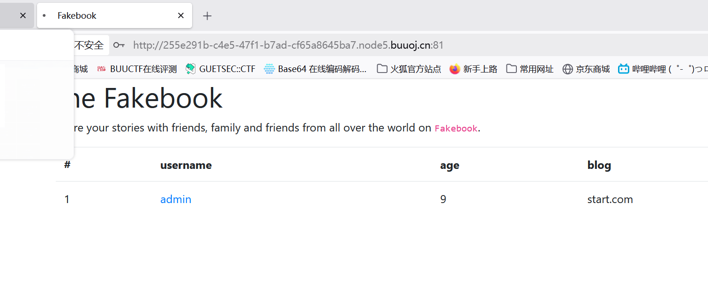
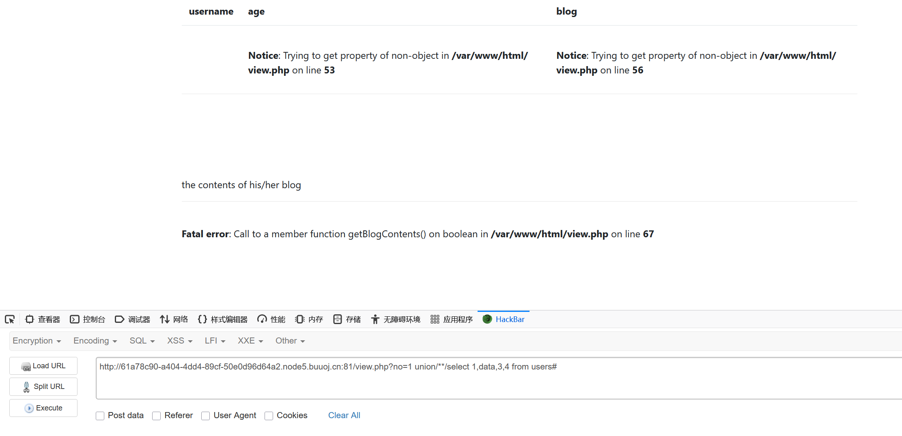
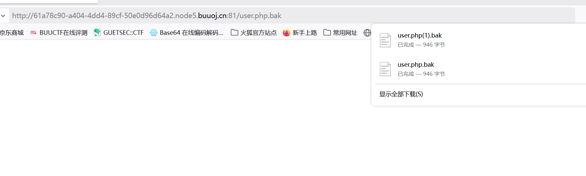

BUUCTF-Web-[网鼎杯 2018]Fakebook
本文为记录个人信安小白的刷题路程，大佬勿喷，也同时希望文章能对您有所帮助
打开靶机，看到有login登录和join注册两个选项，下面一栏是展示用户的，
先看看login界面，测试有没有sql注入漏洞，
看来没有，
再看看join界面，先注册一个用户，
然后回到刚刚的页面就好显示我们的用户信息，

但是到这里，先点击admin去查看用户界面，结果转不进去，就连重新进靶机的请求也超时（感觉被做局了），
后面卡死在这里，看网页源代码和Burp抓包都没有用，然后去看了别的师傅的wp，就是要进用户界面，才能发现一个sql注入点，
那我直接不注册用户，直接请求用户界面，
因为没注册，所以信息栏就是提示和报错（不过不影响），
看到url发现是GET请求传入no参数，推测是数字型注入，
反序列化漏洞
爆字段数

字段数（列数）为4，
爆数据库
发现被过滤，经过测试发现是union select整天被过滤，使用union/**/select进行绕过，
字段2的回显会显示在页面上，
字段2的回显会显示在页面上，
数据库名为fakebook，
爆表名
表名为users，
爆列名
no相当于id， username,passwd就是我们注册的数据，我们现在要爆一下data数据，

我这里显示是空白的，因为我没有注册用户，正常会回显一段序列化数据，推测为反序列化漏洞，网页源码找不到信息，需要dirsear扫描网页，
这里扫描频率要被限制，不然会504报错，
发现flag.php和robots.txt文件，
通过url访问，flag.php文件没内容显示在网页上（可能没有输出flag或者被注释了），查看robots.txt文件，

下载到user.php.bar文件，
1 |
|
需要在blog字段(也就是字段4)传入构造的序列化payload，
1 |
|
查看源码，
点击base64加密后的字符串即可，
获得flag
用户权限过高，
如果细心的你把用户权限爆一下，就会发现注册的用户是root权限，
当权限是root那么我们就可以使用函数load_file直接读取服务器的文件（load_file里的必须时绝对路径，不能是相对路径）
直接快速获得flag